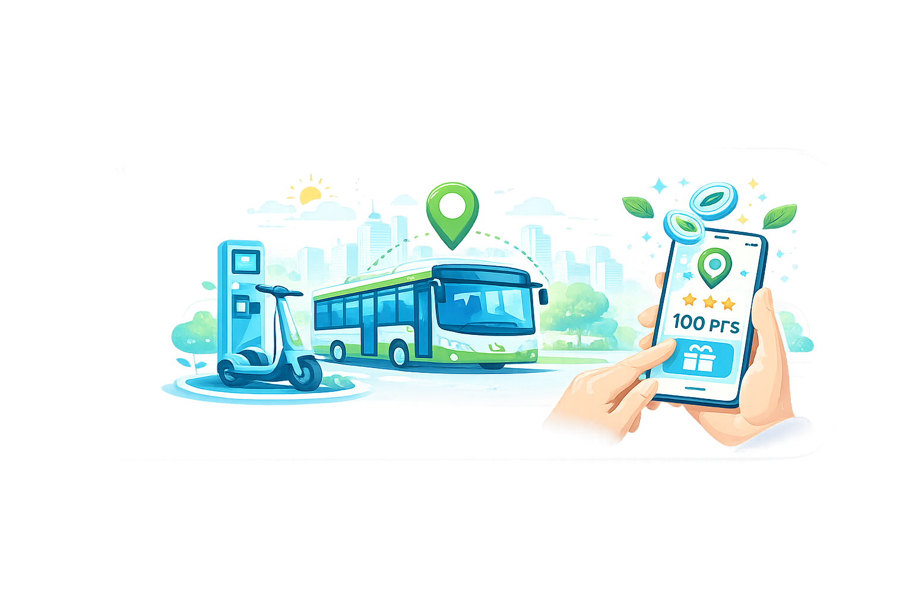

Validação real
Geolocalização e registro fotográfico confirmam cada trajeto, garantindo recompensas justas para quem realmente usa o transporte público.
A UrbanLink nasceu de uma demanda real: criar incentivos concretos para que mais pessoas escolham o transporte público. Acumule pontos em cada trajeto, troque por benefícios e acompanhe seu impacto positivo na cidade.

Geolocalização e registro fotográfico confirmam cada trajeto, garantindo recompensas justas para quem realmente usa o transporte público.
Cada viagem gera dados de CO₂ não emitido, visíveis ao usuário e disponíveis para relatórios ESG de empresas parceiras.
Desafios semanais, metas e rankings transformam o uso do ônibus em uma experiência interativa e motivadora.
Empresas financiam as recompensas e recebem métricas concretas de impacto ambiental — sustentabilidade que pode ser comprovada.
queda no uso do transporte público no Brasil entre 2017 e 2024
dos usuários deixaram o ônibus completamente
voltariam a usar se o custo efetivo fosse menor
menos CO₂ por passageiro no transporte coletivo vs. carro